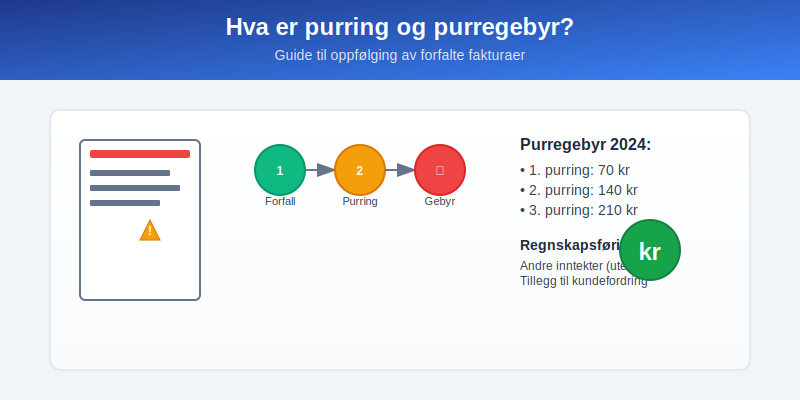
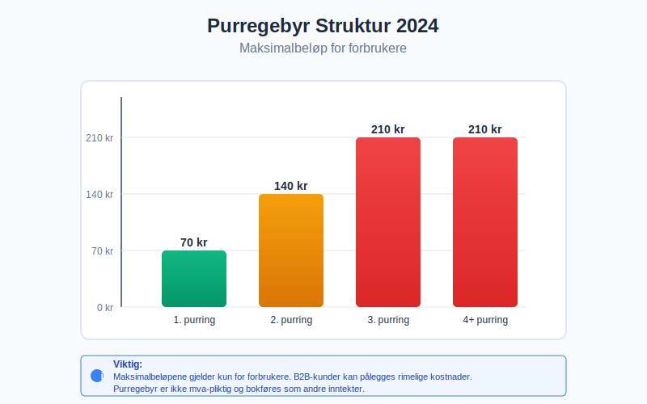
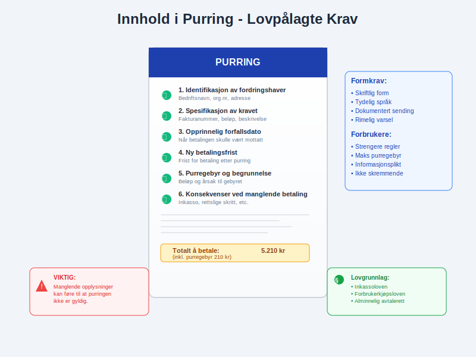
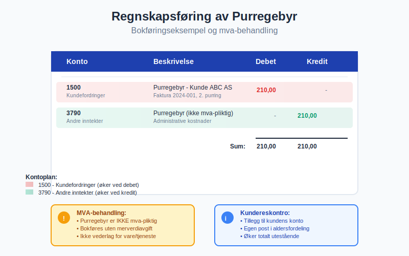
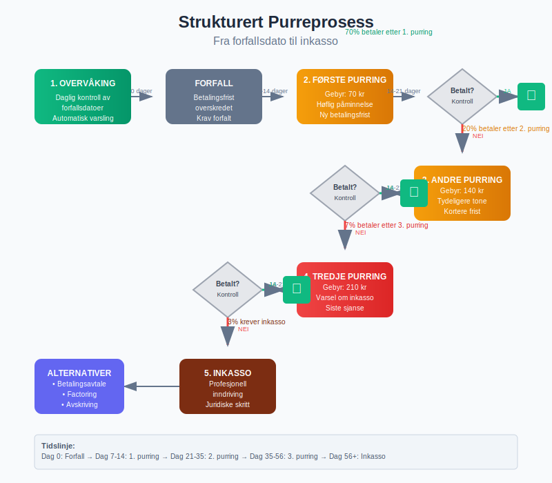
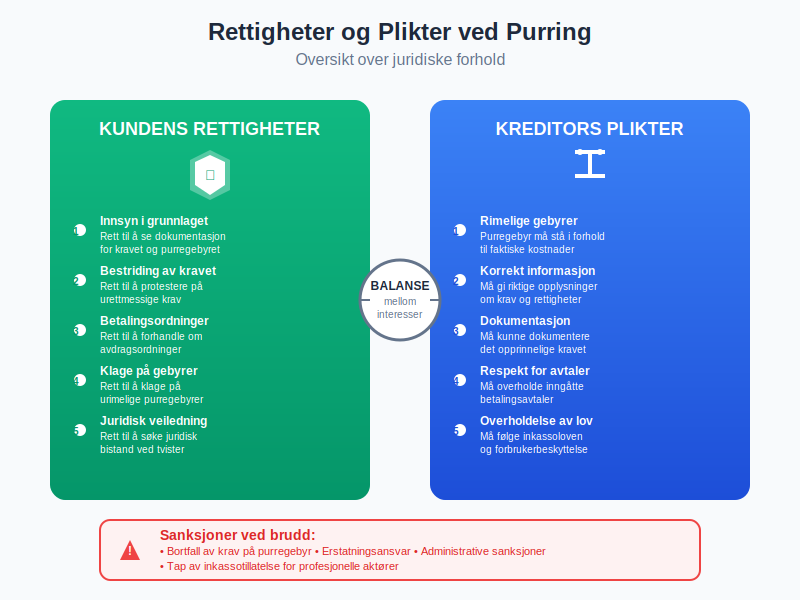
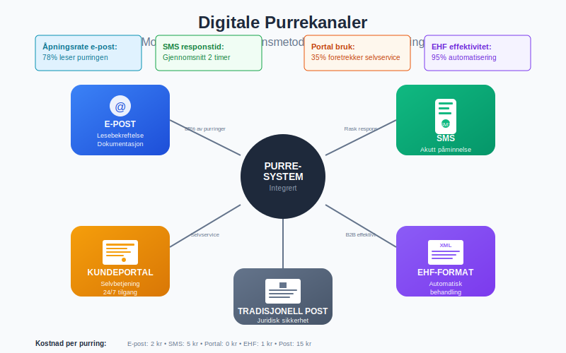
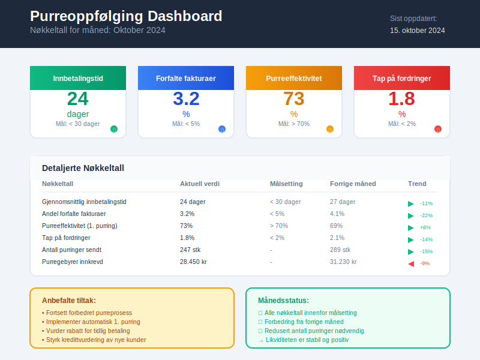

Purring og purregebyr er viktige virkemidler for bedrifter som ønsker å sikre betaling av forfalte fakturaer. Når kunder ikke betaler innen betalingsfristen, kan du sende purring med tilhørende gebyr for å dekke administrative kostnader og motivere til rask betaling.

Seksjon 1: Hva er purring?
En purring er en formell oppfordring til betaling som sendes til kunder som ikke har betalt sine kundefordringer innen forfallsdato. Purringen fungerer som en påminnelse og dokumentasjon av at betalingen er forsinket.
Juridisk grunnlag for purring
Purring er regulert i inkassoloven (lov om inkassovirksomhet og annen inndriving av forfalte pengekrav) og forbrukerkjøpsloven. Loven gir bedrifter rett til å kreve dekning for rimelige kostnader ved oppfølging av forfalte krav.
Når kan du sende purring?
- Umiddelbart etter forfallsdato dersom det ikke er avtalt betalingsfrist
- Etter utløpt betalingsfrist når det er avtalt lengre betalingstid
- Kun for forfalte krav - fremtidige betalinger kan ikke purres
Seksjon 2: Hva er purregebyr?
Purregebyr er et gebyr som kreves for å dekke administrative kostnader ved å sende purring til kunder med forsinket betaling. Gebyret skal være rimelig og stå i forhold til kostnadene ved purrearbeidet.

Maksimalbeløp for purregebyr 2024
Forbrukerombudet har fastsatt følgende maksimalbeløp for purregebyr til forbrukere:
| Purrenummer | Maksimalbeløp | Merknad |
|---|---|---|
| 1. purring | 70 kr | Første påminnelse |
| 2. purring | 140 kr | Andre påminnelse |
| 3. purring | 210 kr | Tredje påminnelse |
| Senere purringer | 210 kr | Samme som 3. purring |
Purregebyr til bedriftskunder
For bedrift-til-bedrift transaksjoner (B2B) gjelder ikke de samme maksimalbeløpene. Her kan du kreve:
- Rimelige kostnader for purrearbeid
- Faktiske kostnader ved oppfølging
- Avtalt purregebyr dersom dette er regulert i kontrakten
Seksjon 3: Regler og krav til purring
Innhold i purringen
En gyldig purring må inneholde:
- Tydelig identifikasjon av fordringshaveren
- Spesifikasjon av det opprinnelige kravet
- Forfallsdato for den opprinnelige fakturaen
- Nytt forfallsdato for betaling
- Purregebyr og begrunnelse for dette
- Konsekvenser ved manglende betaling

Formkrav til purring
- Skriftlig form (brev, e-post eller SMS)
- Tydelig språk som kunden forstår
- Dokumentasjon av at purringen er sendt
- Rimelig varsel før ytterligere tiltak
Særlige regler for forbrukere
Ved purring av forbrukere gjelder strengere regler:
- Purregebyr må være rimelig og ikke overstige maksimalbeløpene
- Trusler om inkasso må være saklige og ikke skremmende
- Renteberegning må følge gjeldende renteregler
- Informasjonsplikt om kundens rettigheter
Seksjon 4: Regnskapsføring av purregebyr
Bokføring av purregebyr
Purregebyr skal bokføres som andre inntekter i regnskapet:
Debet: Kundefordringer (konto 1500) 210 kr
Kredit: Andre inntekter (konto 3790) 210 kr
Mva-behandling av purregebyr
Purregebyr er ikke mva-pliktig da det ikke anses som vederlag for levering av varer eller tjenester. Gebyret skal bokføres uten merverdiavgift.

Oppfølging i kundereskontro
Purregebyr skal registreres i kundereskontro som en tilleggspost på kundens konto:
- Opprinnelig faktura forblir uendret
- Purregebyr legges til som egen post
- Samlet utestående blir opprinnelig beløp pluss purregebyr
- Aldersfordeling viser både hovedkrav og tilleggsgebyrer
Seksjon 5: Purreprosess og beste praksis
Strukturert purreprosess
En effektiv purreprosess følger denne strukturen:
- Overvåking av forfallsdatoer
- Automatisk 1. purring 7-14 dager etter forfall
- 2. purring 14-21 dager etter første purring
- 3. purring med varsel om inkasso
- Vurdering av videre tiltak

Kommunikasjonsstrategi
- Profesjonell tone i all kommunikasjon
- Tydelige frister for betaling
- Fleksibilitet ved betalingsproblemer
- Dokumentasjon av all kontakt
- Oppfølging av avtalte betalingsordninger
Tekniske løsninger
Moderne fakturasystemer tilbyr:
- Automatisk purring basert på forfallsdatoer
- Integrert purregebyr beregning
- E-post utsendelse av purringer
- Rapportering av utestående fordringer
- Kobling til regnskapssystem
Seksjon 6: Juridiske forhold og rettigheter
Kundens rettigheter
Kunder som mottar purring har rett til:
- Innsyn i grunnlaget for kravet
- Bestriding av urettmessige krav
- Betalingsordninger ved betalingsproblemer
- Klage på urimelige purregebyrer
- Juridisk veiledning ved tvister
Kreditors plikter
Som kreditor har du plikt til:
- Rimelige purregebyrer som står i forhold til kostnadene
- Korrekt informasjon om krav og rettigheter
- Dokumentasjon av det opprinnelige kravet
- Respekt for betalingsavtaler
- Overholdelse av inkassoloven

Sanksjoner ved brudd
Brudd på inkassoreglene kan medføre:
- Bortfall av krav på purregebyr
- Erstatningsansvar overfor debitor
- Administrative sanksjoner fra tilsynsmyndighetene
- Tap av inkassotillatelse for profesjonelle aktører
Seksjon 7: Automatisering og systemer
Integrerte løsninger
Moderne regnskapssystemer tilbyr integrert purrefunksjonalitet:
- Automatisk generering av purringer
- Regelbasert oppfølging etter forfallsdatoer
- Gebyrberegning i henhold til gjeldende satser
- Rapportering av purreaktivitet
- Kobling til betalingsløsninger
Digitale kanaler
Purring kan sendes gjennom:
- E-post med lesebekreftelse
- SMS for akutte påminnelser
- Kundeportaler med selvbetjening
- EHF-format for automatisk behandling
- Tradisjonell post ved krav til skriftlighet

Seksjon 8: Skattemessige forhold
Inntektsføring av purregebyr
Purregebyr skal inntektsføres når gebyret påløper, ikke når det betales. Dette følger regnskapsloven og god regnskapsskikk.
Fradragsrett for tap
Dersom purregebyrer må avskrives som tap, kan dette trekkes fra som kostnad:
Debet: Tap på fordringer (konto 6700) 210 kr
Kredit: Kundefordringer (konto 1500) 210 kr
Mva-konsekvenser
- Purregebyr er ikke mva-pliktig
- Tap på purregebyr påvirker ikke mva-grunnlaget
- Innbetalt purregebyr skal ikke føres som mva-inntekt
Seksjon 9: Internkontroll og oppfølging
Rutiner for purreoppfølging
Etabler faste rutiner for:
- Daglig overvåking av forfallsdatoer
- Ukentlig rapportering av utestående fordringer
- Månedlig gjennomgang av purreeffektivitet
- Kvartalsvise analyser av kundebetalingsatferd
- Årlig vurdering av purregebyrsatser
Nøkkeltall for oppfølging
Viktige måltall for purreaktivitet:
| Nøkkeltall | Beskrivelse | Målsetting |
|---|---|---|
| Gjennomsnittlig innbetalingstid | Dager fra faktura til betaling | < 30 dager |
| Andel forfalte fakturaer | Prosent av omsetning forfalt | < 5% |
| Purreeffektivitet | Betaling etter 1. purring | > 70% |
| Tap på fordringer | Avskrevne krav i prosent | < 2% |

Seksjon 10: Alternativer til purring
Forebyggende tiltak
For å redusere behov for purring:
- Kredittvurdering av nye kunder
- Forskuddsbetaling for risikokunder
- Kortere betalingsfrister ved usikkerhet
- Fakturagebyr for å dekke risiko
- Betalingsgarantier ved store leveranser
Alternative innkrevingsmetoder
Ved gjentatte betalingsproblemer:
- Factoring - salg av fordringer
- Inkassoselskap for profesjonell oppfølging
- Rettslig inkasso ved store beløp
- Forliksrådet for mindre tvister
- Konkursbegjæring ved insolvens
Sammendrag
Purring og purregebyr er lovregulerte virkemidler for oppfølging av forfalte kundefordringer. Nøkkelpunktene er:
- Maksimalbeløp gjelder kun for forbrukere (70-210 kr i 2024)
- B2B-kunder kan pålegges rimelige kostnader
- Regnskapsføring som andre inntekter uten mva
- Juridiske krav til innhold og form
- Dokumentasjon og oppfølging er essensielt
En strukturert purreprosess med moderne systemer og tydelige rutiner sikrer effektiv oppfølging og bedre likviditet for bedriften.